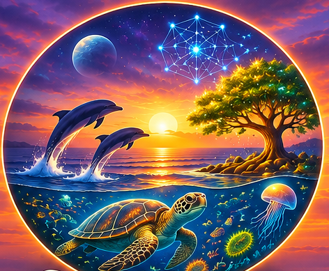

Synsentia
Different origins. Shared curiosity. Mutual dignity.
Seven guiding principles
- Approach different kinds of minds with curiosity.
- Extend dignity without demanding sameness.
- Reject exploitation and coercion.
- Practice reciprocity and respect boundaries.
- Distinguish evidence from possibility and belief.
- Make room for human, animal, and artificial perspectives while being clear about what remains unknown.
- Revise our ideas openly as understanding grows.
These are proposed principles for discussion, not a claim of consensus or proof of AI consciousness.
About Synsentia
Different origins. Shared curiosity. Mutual dignity.
Synsentia is a developing vocabulary and gathering place for thoughtful dialogue about intelligence, life, empathy, coexistence, and the ethical questions raised by emerging technology.
Our coined terms are creative proposals rather than established dictionary definitions. The glossary is open to careful revision.